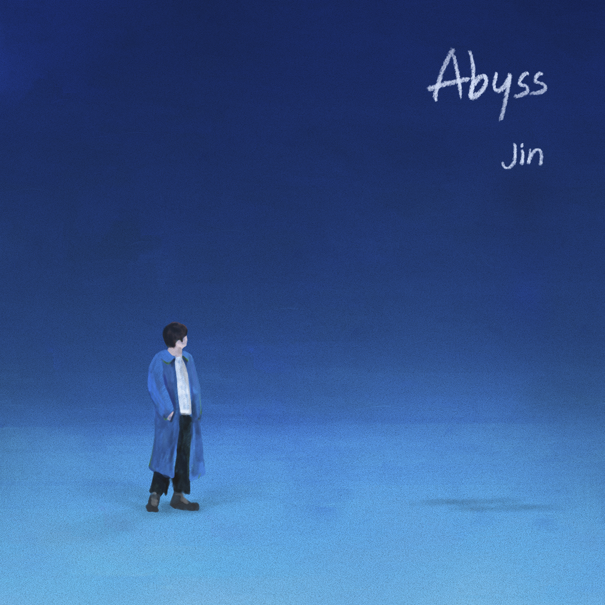

이 밤 (tonight)

Abyss
이 밤이 지나면
널 볼 수 없을까봐 두려워
한없이 투명한 그 눈빛도
너무 익숙해진 그 촉감도
나를 보며 웃었던 얼굴도 이제
이제 너를 다시 볼 수 없을까
나의 하루하루에
니가 있고
너의 하루하루에
내가 있어
저 달이 지고 해가
떠오르면
나와 함께 했던 넌
없을까
내 눈을 감으면
함께했던 시간들이 떠오를 것 같아
내 눈을 감으면 또
행복했던 추억들만 생각날 것 같아
이 밤이 지나면
널 볼 수 없을까봐 두려워
이 밤이 지나면
나 홀로 남을까봐 두려워
숨을 참고서 나의 바다로 들어간다 간다
아름답고도 슬피 우는 나를 마주한다
저 어둠 속의 날
찾아가 말하고 싶어
오늘은 널 더 알고 싶다고 yeah
아직도 나는 내게 머물러있다
목소린 나오질 않고 맴돌고만 있다
저 까만 곳
잠기고 싶어 가보고 싶어
I’ll be there
오늘도 또 너의 주위를 맴돈다
너에게 갈수록 숨이 차오르고
넌 더 멀어지는 것 같아
더 깊은 바다로 들어간 건 아닐까 yeah
저 바닷속의 날
찾아가 말하고 싶어
오늘은 널 더 알고 싶다고 yeah
아직도 나는 내게 머물러있다
목소린 나오질 않고 맴돌고만 있다
저 까만 곳
잠기고 싶어 가보고 싶어
I’ll be there
오늘도 이렇게 너의 곁으로 눈을 감는다
Produced by BUMZU
(BUMZU, Jin, RM, Pdogg)
Additional Production – Pdogg
Keyboard – BUMZU
Synthesizer – BUMZU
Guitar – 박기태
Drum Production – Pdogg
Background Vocal – James Keys
Vocal Arrangement – Pdogg, GHSTLOOP
Recording Engineers – Pdogg @ Dogg Bounce
GHSTLOOP @ Phantom Field
Digital Editing – Pdogg, Hiss noise, GHSTLOOP
Mix Engineer – 박진세 @ Big Hit Studio
Mastering Engineer – 최효영 @ SUONO Mastering
📬 :
안녕하세요 진입니다.
얼마 전, 기자 회견을 하면서 이런 얘기를 한적이 있어요
“나는 내 슬픈 감정을 팬분들과 공유하고 싶지 않다.
좋은 것만 보여드리고 싶기 때문이다.
하지만 그게 음악이라면 얘기는 다르다.
평소 나의 행동으로는 공유하고 싶지 않지만 음악으로서는 보여드려도 괜찮을 것 같다.”
사실은 최근에 크게 번아웃이 왔는데 저 자신에 대한 많은 생각이 들어서 그랬던 것 같아요.
빌보드 핫 100 1위를 하고 많은 분들께 축하인사를 받았는데 내가 이런걸 받아도 될까..
사실 나보다 음악을 더 많이 사랑하고 더 잘하는 분들도 많은데 내가 이런 기쁨과 축하를 받아도 괜찮을까..
하는 생각이었고 더 깊이 들어가다보니 마음이 힘들어 다 내려놓고 싶었던 것 같아요.
이 일로 상담도 받으며 하루하루 지내다가 방피디님과 얘기를 해봤는데 지금 이 감정을 노래로 써보면 어떻겠냐고 하시더라고요.
잘 만들 자신도 없고 결과물이 좋지 않으면 어쩌나, 나는 이미 그러면 안되는 위치에 와버렸는데.. 라고 대답을 하니
방피디님은 그런 건 중요하지 않다. 하지만 하게 된다면 너는 분명 잘 할거다 너에게 맞는 사람을 찾아봐주겠다고 하셨어요.
그렇게 작곡가 계범주형님을 만나게 되었고 지금 제 감정과 많은것들에 대해 얘기를 나눴습니다.
밝고 긍정적인 분이시더라고요. 형님은 저를 도와주고싶다고 하셨고 '많은 불안들에 대해 써보자~ 잘 안되면 또 새로 해보면 된다'는
긍정의 힘으로 절 다시 밝게 해줬어요.
그렇게 여러 얘기를 나눠보고 지금 저의 감정을 그대로 현장에서 트랙으로 만들어줬고 이걸로 해보고 싶은 얘기를 써내려가니
Abyss가 완성 됐습니다. 계범주 형님에게 다시 한번 고맙다고 얘기하고 싶어요.
생일에는 맞지않는 좀 우울한 노래지만 그래도 생일이 아니면 애매할 거 같아 Abyss를 공개하게 되었네요.
아미들, 부족하더라도 잘 들어주세요.
ps. 후렴구 가사 써준 우리 리더님 감사합니다.
🌙 이 밤
🌕 Abyss